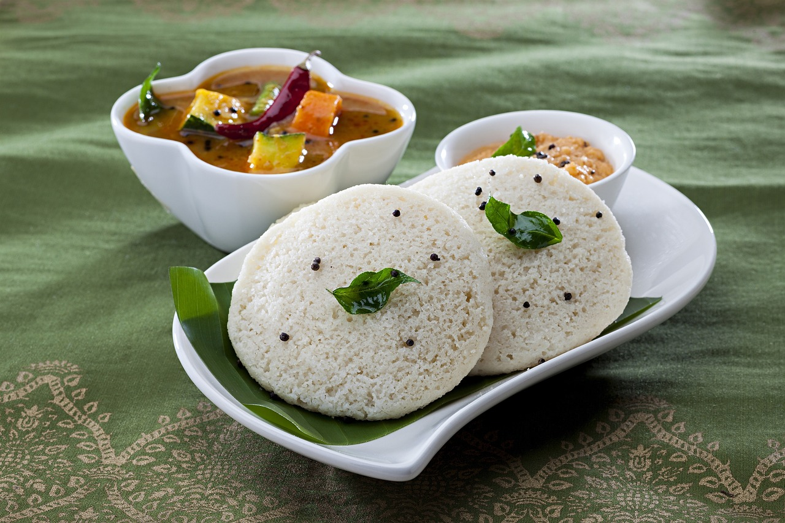
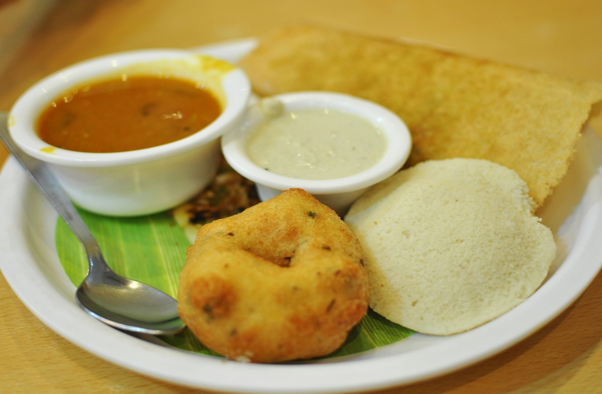

Idli
What is Idli
Idli or idly is a type of savoury rice cake, originating from South India, popular as a breakfast food in Southern India and in Sri Lanka. The cakes are made by steaming a batter consisting of fermented black lentils and rice.
Ingredient List For Idli
- Urad dal (black gram)
- Idli rice (parboiled rice)
- Fenugreek seeds
- Salt
- Water
How to make Idli
Soak Rice and Lentils
1. Wash and rinse the urad dal (black gram) and idli rice (parboiled rice) separately a couple of times.
2. In two separate bowls, soak the urad dal and idli rice along with fenugreek seeds in enough water. Let them soak for at least 4-6 hours or overnight.
3. After soaking, drain the water from both the urad dal and rice.

Grind or Blend Rice and Lentils
4. Grind the urad dal to a smooth and fluffy batter, adding water as needed. This may take about 15-20 minutes of grinding.
5. Transfer the urad dal batter to a large bowl.
6. Grind the soaked idli rice to a slightly coarse consistency, adding water as needed. It should be finer than regular rice but not as smooth as the urad dal batter.
7. Transfer the rice batter to the same bowl as the urad dal batter.
8. Add salt to the batter and mix well.
Ferment Idli Batter
9. Cover the bowl with a lid or plastic wrap and allow the batter to ferment in a warm place for about 6-8 hours or until it has doubled in volume. The fermentation time may vary depending on the temperature and climate.
10. Once the batter has fermented, it's ready to make idlis.
Bake The Idli
11. Grease the idli molds or plates with a little oil or ghee to prevent sticking.
12. Pour ladlefuls of the batter into each idli mold.
13. Steam the idlis in an idli steamer or any steaming vessel for about 10-15 minutes or until a toothpick inserted into an idli comes out clean.
14. Allow the idlis to cool slightly before removing them from the molds.
15. Serve the idlis hot with sambar, coconut chutney, or any other accompaniment of your choice.
